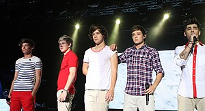

One Direction, often shortened to 1D, are an English-Irish pop boy band formed in London in 2010. The group is composed of Niall Horan, Liam Payne, Harry Styles, Louis Tomlinson, and previously Zayn Malik until his departure from the group in March 2015. They became one of the best-selling boy groups of all time before going on an indefinite hiatus in 2016. The group signed with Simon Cowell's record label Syco Records after forming and placing third in the seventh series of the British televised singing competition The X Factor in 2010. Propelled to global success by social media,[1][2][3] One Direction's five albums, Up All Night (2011), Take Me Home (2012), Midnight Memories (2013), Four (2014), and Made in the A.M. (2015), topped charts in several countries, and generated hit singles including "What Makes You Beautiful" (their first number one on the UK Singles Chart, and the highest debut for a British act on the US Billboard Hot 100 since 1998), "Live While We're Young", "Best Song Ever", "Story of My Life" and "Drag Me Down". After the release of Four, One Direction became the first band in the US Billboard 200 history to have their first four albums debut at number one.[4] Their third album, Midnight Memories, was the best-selling album worldwide of 2013.[5] Considered teen idols, One Direction were often subject to fan hysteria.[6][7] They embarked on four world tours, two of which were all-stadium. The band's Where We Are Tour, in support of Midnight Memories, was the highest-grossing concert tour in 2014, the highest-grossing tour by a vocal group in history, and the 15th highest-grossing concert tour of all time, grossing $290.2 million (unadjusted for inflation).[8] The band went on indefinite hiatus in January 2016, allowing all members to pursue other projects.[9][10]
As of 2020, the band have sold a total of 70 million records worldwide,[11] making them one of the best-selling boy bands of all time.[12] The band have won nearly 200 awards, including seven Brit Awards, four MTV Video Music Awards, six Billboard Music Awards, seven American Music Awards (including Artist of the Year in 2014 and 2015), and 28 Teen Choice Awards. In 2013, they earned an estimated $75 million, becoming the second highest earning celebrity under 30 according to Forbes.[13] As the world's best-selling artist of 2013, the group was named the Global Recording Artist of the Year by the International Federation of the Phonographic Industry.[14] In 2014, Billboard named the band "Artist of the Year".[15][16] Forbes ranked them as the fourth highest-earning celebrities in the world in 2015,[17] and subsequently in second in 2016.[18]